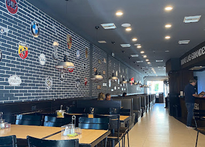
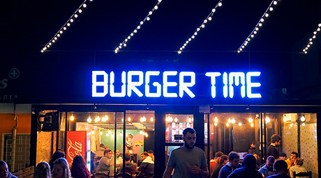
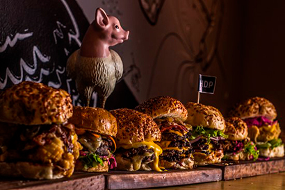
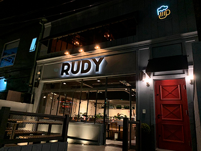
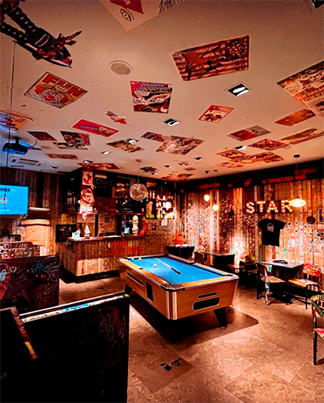

+NUEVO

Garage burger
Garage Burger se ha convertido en un clásico de Montevideo gracias a su estilo urbano y sabores
intensos.
Sus hamburguesas son artesanales, jugosas y con combinaciones atrevidas como la “Chilli Bacon”. El
local
tiene una estética inspirada en talleres mecánicos, ideal para una salida con amigos. Además,
ofrecen
papas cargadas y cervezas artesanales que complementan la experiencia.
Visitar web
+NUEVO

Burger time
Burger Time es famosa por sus hamburguesas de gran tamaño y sabor casero. Utilizan ingredientes
frescos
y carne 100% vacuna, con opciones que van desde lo clásico hasta lo gourmet. Tienen locales en
varios
puntos de Montevideo, lo que facilita encontrar uno cerca. Es una excelente opción para quienes
buscan
sabor, abundancia y buen precio.
Visitar
web
+NUEVO

HDP
HDP ofrece hamburguesas con personalidad, hechas con ingredientes seleccionados y presentaciones
originales. Su menú incluye desde la clásica cheeseburger hasta opciones con huevo frito, panceta
crocante y salsas caseras. El ambiente moderno y descontracturado atrae a un público joven y foodie.
También destacan por su atención y compromiso con la calidad.
Visitar web

RUDY
Rudy ha ganado popularidad en Montevideo por sus hamburguesas gourmet con un toque casero. Su
propuesta
combina calidad, estética y sabor, con recetas que incluyen quesos importados y panes especiales. El
ambiente es relajado y moderno, ideal para disfrutar con amigos o en pareja. También ofrecen
opciones
vegetarianas y un excelente servicio al cliente.
Visitar
web

Burger point
Burger Point es una hamburguesería ubicada en el lobby del hotel Dazzler en Montevideo. Su
decoración se basa en los años 90, con un estilo interactivo que permite a los clientes escribir en
las paredes, el suelo e incluso el techo. Ofrecen hamburguesas con carne de Wagyu y pan especial,
brindando una experiencia única. Es una opción ideal para quienes buscan una combinación de buena
comida y ambiente original.
Visitar
web